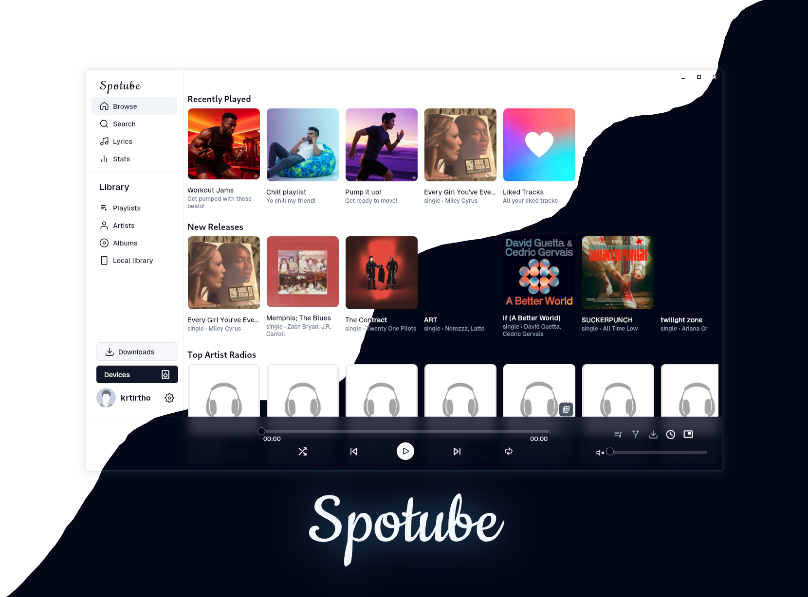

用 Spotube 搭一条「听歌→记谱→出周报」自动化链
每周整理自己的播放记录写成周报贴 Notion，以前要三步手动接力，现在 Spotube 一个应用把 Spotify 元数据、ListenBrainz 记谱、MusicBrainz 补全串成闭环。
我每周要给自己的 Notion 写一份「本周听歌记录」——不是流水账，是带播放次数 Top 10、风格分布饼图、发现的新艺人三个板块的小周报。以前这条链要三步手动接力，中间卡了不止一次。
旧流程：三个工具来回切，两次手动复制
最初我是这么干的：
- 用 Spotify 听歌，它自动把播放记录推给 Last.fm
- 周末打开 Last.fm 网页端，手动点「导出 CSV」（Last.fm 没有官方 API 导出，只能下载那个 2013 年没变过的 CSV 按钮）
- 把 CSV 拖进 Excel，写 VLOOKUP 按艺人聚合次数，截一张饼图，复制 Markdown 表格贴 Notion
这条链的问题从第一环就开始了。Spotify 在我的地区只能用 Premium，古典曲目和一些独立发行的专辑在 Spotify 曲库里直接搜不到——我听了两首现场版，Last.fm 记的却是 Spotify 上根本不存在的条目，最后周报里的 Top 10 混着「未知艺人」，统计废掉。
中间的 CSV 导出环节更脆。Last.fm 的导出按钮偶尔会返回空文件，而且字段是 2013 年的 schema，缺 genre、缺 album art，我每次要手动补三列。再加上 Last.fm 不支持 MusicBrainz ID，同一个艺人的不同版本（比如「John Coltrane」和「John Coltrane Quartet」）会被当成两条，统计聚合时我得手动合并 Excel 里的 30 多行重复。
新流程：Spotube 插在中间，三段变一段
换 Spotube官网 之后，整个流程的结构变成了这样：
Spotube 听歌（Spotify 元数据 + YouTube/Piped 音频流）
↓ 自动
ListenBrainz 记谱（Spotube 内置 MusicBrainz 插件）
↓ 每周一次
脚本拉 ListenBrainz API → 生成周报 Markdown → 贴 NotionSpotube 在这里扮演的角色不是「又一个播放器」，而是三个外部服务的统一入口。它的插件架构里，Spotify Metadata 插件负责搜歌、拿歌单、拉艺人信息；MusicBrainz 插件在 Spotify 搜不到时自动补全冷门曲目的元数据（古典、爵士、世界音乐这块比 Spotify 全得多）；同时 MusicBrainz 插件还实现了 ListenBrainz 的 ScrobbleAPI——每次播放的曲目会被自动推到 ListenBrainz，不需要我额外装 Last.fm 客户端。
下载安装包后，我只需要在 Spotube 设置里做三件事：Spotify 账号登录（它只在设备本地存 OAuth token，用 flutter_secure_storage 加密，不会走任何中间服务转发）、ListenBrainz 账号的 User Token 粘贴进去、音频源选 Piped（因为我这边 YouTube API 不稳定，Piped 实例挂了换一个就行）。之后播放行为就完全自动记录了。

衔接点一：ListenBrainz vs Last.fm 的选择
这条链能不能跑，记谱服务的选择是关键。我之前用 Last.fm 五年，换 ListenBrainz 的原因有三个：
- MBID 打通：Spotube 的 MusicBrainz 插件给每首曲目打上 MBID，ListenBrainz 用 MBID 做播放记录的唯一标识，同一个艺人的不同版本不会被拆成两条。我之前在 Last.fm 手动合并的那 30 多行，换 ListenBrainz 之后自动就合并了。
- API 开放：ListenBrainz 有完整的 REST API，可以用脚本直接拉播放记录 JSON，不用走 CSV 导出那条 2013 年的老路子。
- 数据可全量导出：ListenBrainz 允许你一键下载自己所有的播放记录 JSON，Last.fm 没有这个功能——万一哪天账号被封，数据带不走。
ListenBrainz 账号是免费的，注册完去个人设置页拿 User Token，粘贴到 Spotube 设置 → Scrobble 里就生效了。Spotube 可以同时连 Spotify Metadata 和 ListenBrainz Scrobble，两者互不干扰：Spotify 负责「我搜什么歌、我有哪些歌单」，ListenBrainz 负责「我实际听了什么」。
衔接点二：冷门曲目元数据补全
旧流程里我最头疼的是 Spotify 搜不到的曲目。比如我最近在听的 John Zorn 的《Naked City》现场版，Spotify 只有 studio album，没有 bootleg。以前在 YouTube 上听完 Last.fm 记的是「未知艺人」，现在 Spotube 的 MusicBrainz 插件会自动用 MBID 匹配——MusicBrainz 的众包数据里有人补了 Zorn 的 bootleg 信息，Spotube 拿到正确的艺人名、专辑名、MBID，ListenBrainz 那边就不会出现「未知」。
MusicBrainz 的插件能力不止补元数据这么简单。它的条目带全球唯一的 MBID，ListenBrainz 用这个 ID 做关联，我之后写周报时拉 API，每个艺人、每首曲目都是唯一的，不用再手动合并——MusicBrainz 插件的配置细节可以翻 Spotube文档。

实操细节：两个最容易断链的环节
这条链跑了六周，断过两次。都是同一个地方——Spotube 数据目录里的数据库文件没关进程就拷贝，导致 spotube.db 损坏。Spotube 的播放列表、收藏、歌单全存在这个 SQLite 文件里，而 ListenBrainz 的 scrobble 是实时推送的，数据库坏了不影响记谱，但会丢本地歌单。
细节一：备份的正确姿势
Spotube 没有内置备份功能，手动备份的步骤是：
- 先完全退出 Spotube（Windows 下任务管理器确认 spotube.exe 进程没了，它写 spotube.db 时进程退出才 flush 到磁盘）
- 复制
%APPDATA%\Spotube\spotube.db到备份位置 - 如果想保留主题和 EQ 设置，同时复制
preferences文件
我之前图省事直接复制进程还在的数据库文件，结果两次损坏。现在把「退出 Spotube → 等 5 秒 → 拷贝」做成了 Notion 周报模板里的 checklist，每周五固定触发。
细节二：音频源切换的自动化
Spotube 的音频源不是只有一个默认。设置里可以选 YouTube、Piped、Invidious 三种，而且支持按曲目单独切换——播放页右下角有一个源切换按钮。我写周报脚本时加了一个小逻辑：拉 ListenBrainz 记录时，标记出哪些曲目是 Piped 拿到的、哪些是 YouTube 拿到的，周报里专门有一行「本周 Piped 兜底 X 首」。这让我能快速知道 Piped 实例挂没挂（某个实例挂了，那周 Piped 兜底数量会骤增），提前换实例。
Spotube v5.1 起音频源也插件化了，社区已经有 Qobuz Audio、Dab Radio 这些插件。我没试过，但如果你是 CD 音质的发烧友，FLAC 无损支持已经在 v5.1 里原生加好了——Spotube 直接原样播放 Qobuz 插件拿的 FLAC 流，不做重采样。
效果与边界
这条链跑起来之后，我每周整理周报的时间从 45 分钟降到了 10 分钟——少了两次手动 Excel 合并、一次 CSV 手动导出、一次 Notion 手动贴 Markdown 表格。
但这套流程也有明确的边界：
- ListenBrainz 需要你主动注册。Spotube 默认不做任何遥测上传，Play 记录不会自动上传任何地方——这是它的设计哲学。你不登 ListenBrainz 就纯本地，那这条链的记谱环节就没了。
- Spotube 下载的曲目在本地，默认路径是
%USERPROFILE%\Music\Spotube Downloads\。如果你同时在多台设备听歌，各设备的下载目录是隔离的，记谱是统一的（ListenBrainz 按账号聚合），但离线曲目不会跨设备同步。 - 插件系统目前不支持热更新。改了插件代码要重新构建 .smplug、重启 Spotube 才生效。对普通用户来说这不是问题，但如果你自己写插件调试，得接受改一行重启一次。
我这套「听歌 → ListenBrainz → 周报」的链，核心收益不是「少点了几下按钮」这么简单——是把 Last.fm 那条 2013 年没变的 CSV 导出链彻底干掉了。ListenBrainz 的 API 是结构化的，MBID 是唯一的，脚本直接拉 JSON 就出周报，这两件事 Last.fm 做不到。而这全是 Spotube 把三个插件（Spotify Metadata、MusicBrainz、ListenBrainz Scrobble）串在同一个进程里带来的副作用——我之前分别装 Spotify 客户端、Last.fm 客户端、MusicBrainz 浏览器扩展，三个工具各管一段，现在一个应用就够了。
这套Spotube插件生态的完整资料和构建流程，我同步维护在 GitHub、Gitee、GitCode 三个仓库里，方便不同网络环境的同学参考。